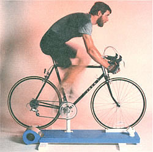
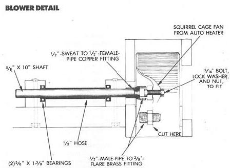
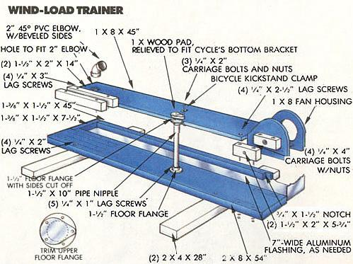

Keep your aerobic capacity at its peak even when bad weather stops you from taking to the highway.
Bicycling is widely recognized to be an excellent form of aerobic exercise, and it's also great fun. However, bad weather and lack of time can sometimes make it difficult to keep up a regular training program. During the short and often cold days of winter, when you're probably not able to get out on the asphalt at least every other day, a session or two per week on a wind-load trainer may be the answer to staying in top condition.
No, it's better than an exercise bicycle. A wind-load trainer uses a fan (rather than a friction device) to resist pedaling, so the effort required increases nearly exponentially with speed. This more accurately mimics actual conditions encountered when riding a bicycle. Furthermore, you use a wind-load trainer from the platform of your own, familiar bicycle, so you stress the same muscle groups as you do when cycling. Working out on a wind-load trainer can also improve the smoothness and speed of your cadence, while using an exercise bicycle may have the opposite effect.
MOTHER's wind-load trainer is built from wood - unlike most commercial models - because it's the easiest material to work with. Nonetheless, our trainer doesn't sacrifice features. The 28"-wide base makes it as stable as any, the drive shaft rides on sealed roller bearings, the bicycle is supported under the bottom bracket so that no unusual load is imposed on the machine's front fork, and a channel along the right-hand side routes air from the fan to an adjustable nozzle that allows a cooling breeze to be directed on the rider.
The only significant disadvantage of MOTHER's wind-load trainer is that it isn't widely adjustable. The wooden front wheel braces could be slotted to accommodate different widths of tires, but the height of the bottom-bracket clamp - built from a 1-1/2" X 10" pipe nipple, two 1-1/2" floor flanges, parts of a kickstand, and assorted hardware - can't be easily altered.
Consequently, you should build the trainer to suit the dimensions of the bicycle you'll be using on it. To do so, mount the bottom bracket clamp last, and position it so that the rear tire of the bicycle bears down on the drive shaft enough to deflect the tire 1/16" to 1/2". At the same time, mount the bicycle as far forward as possible, so that the rear tire clears the wooden base by about 1/2". This keeps the cycle's frame as close to level as possible to maintain a comfortable riding position.
Unless you keep your own collection of automotive organ donors, you'll have to take a junket to the junkyard to find a squirrel cage fan from the heater of just about any U.S.-built vehicle. Every one we encountered fit on a 5/16" shaft, but the lengths and outside diameters did vary. To adapt, use a different length of bolt to secure the fan to the 5/8" drive shaft, and size the fan housing accordingly. Depending on the fan's configuration, you may have to trim off the threaded portion of the flange side of the brass fitting, and bore it out for the bolt.
Though we ran our prototype trainer for quite some time without a fixed connection between fan and drive shaft, it's probably a good idea to solder the copper fitting to the 5/8" shaft. (Get the shaft good and hot before applying heat to the copper fitting.) There are several bearing setups you could use. Pillow blocks would be simplest, but roller bearings in wood cost about $20 less. The standard manufacturer number for a caged, sealed, 5/8" bore X 1 3/8" O.D. roller bearing is R10. You can ask your hardware store to order W.W. Grainger number R10-LL, 1L040. Each will be about $5.
For the racing cyclist, there are a number of ways a wind-load trainer can be used to improve performance; we suggest you look into books on the subject. For the recreational bicycle rider, a trainer is probably best used for aerobic workouts - exercise that will improve cardiovascular system fitness without building huge thighs.
Essentially, you'll want to maintain a pulse rate of about 75% of maximum for at least 30 minutes at least three times per week. How do you determine your maximum heart rate? As a rough rule of thumb, subtract your age from 220, and multiply the result by 0.75. Then, for example, if you're 35, your workout heart rate should be about 140 per minute (220 - 35 = 185; 185 X .75 = 138.75). Don't push yourself harder; this level of effort will build your endurance without wearing you to a frazzle.
When you pedal on the trainer, select a gear that will allow you to maintain a smooth cadence of at least 60 revolutions per minute. The key is to learn to spin the pedals in a complete circle rather than mashing them down (you'll find toe clips to be a nearly indispensable aid to accomplishing this). As you become more proficient, you should be able to increase your cadence to 90 or more revolutions per minute while maintaining a smooth rotating motion.
After you've been at it for 10 minutes or so, you'll find yourself breaking out in a sweat-despite the cooling flow of air. (Though this is a sure sign that your regimen is working, it's a good idea to clean your bicycle when you're done.) At about the same time, your pulse should stabilize, and you should be able to keep it up for another 20 or 30 minutes. All you'll need to do in the meantime is stave off boredom - perhaps with a strategically placed copy of this magazine.
|
 |
 |
 |